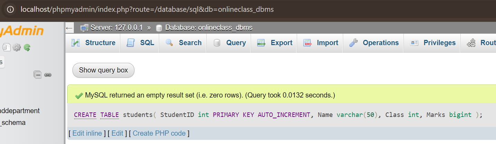
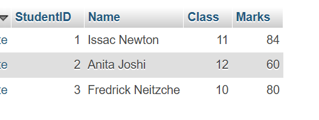
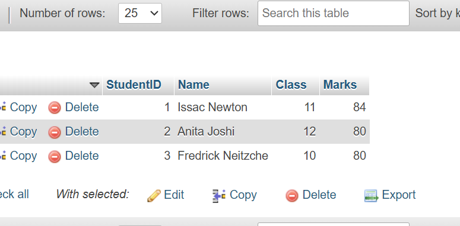
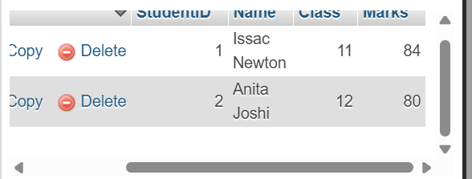

Chapter 1: Database Management System
- Introduction:
- Data
- Data is the raw fact about anything which is unprocessed, un-interpreted or unorganized, but able to organize into useful information. For Example: Hari, Manager, Pokhara, 5 etc.
- Information
- When raw data is processed and changed it into meaning data, then the meaningful data is called information. Information is processed, interpreted or organized data.
- Features of Information
- Information is valuable when it possesses characteristics like accuracy, relevance, completeness, timeliness, and accessibility. It should be easy to understand and cost-effective, ensuring it's presented in a clear and concise manner, avoiding bias or errors.
- Database and its Purpose:
- Reducing Data Redundancy
- Sharing of Data
- Data Integrity
- Data Security
- Privacy
- Backup and Recovery
- Data Consistency
| S.N | Topic | Content wise marks | Woking Hours |
|---|---|---|---|
| 1. | Database management system | 8 | 12 |
| 2. | Database communication and networking | 9 | 15 |
| 3. | Web Tech-II | 8 | 12 |
| 4. | C Programming II | 8 | 12 |
| 5. | Object oriented programming | 6 | 10 |
| 6. | Software development life cycle | 6 | 10 |
| 7. | Recent Trends in technology | 5 | 9 |
| Total | 50 | 80 | |
A database is a large collection of interrelated data of certain place, person or things in such a way that it can be easily access by an application program like DBMS. For Example: candidates of SLC exam, users of Facebook, users of NTC/NCELL etc.
Some of the advantages are given below-
- Terminologies in Database
- Table
- Each table stores data about a particular subject, such as employees or products. A table has records (rows) and fields (columns).
- Field
- Fields have different types of data, such as text, numbers, dates, and hyperlinks. Fields have different types of data, such as text, numbers, dates, and hyperlinks.
- Record
- Record is a collection of related fields which represents a complete unit of information
- Tuple
- A tuple, also known as a record or row, is a basic unit of data in a relational database management system (DBMS).
- Object
- A database object is anything that is used to store or manipulate data. These can include tables, indexes, sequences, and more.
- Keys
- In database management systems (DBMS), keys are essential components used to uniquely identify records (rows) within a table and establish relationships between different tables. They play a crucial role in maintaining data integrity, ensuring uniqueness, and enabling efficient data retrieval.
- Data Dictionary
- In DBMS, a data dictionary is a centralized repository of information about data, including its meaning, relationships, usage, and format.
Database Management System (DBMS)
- Improved data Security
- Data retreival
- Improved desicion making
- Better data sharing facility
- Complexity
- Large size
- Higher impact of a failure
- Significant cost of DBMS
- Types of Database Model
- Hierarchical databases
- It is one of the oldest database model developed by IBM for information Management System. In a hierarchical database model, the data is organized into a tree-like structure. In simple language we can say that it is a set of organized data in tree structure. This type of Database model is rarely used nowadays. Its structure is like a tree with nodes representing records and branches representing fields. The windows registry used in Windows XP is an example of a hierarchical database. Configuration settings are stored as tree structures with nodes.
- Network databases
- This is looks like a Hierarchical database model due to which many time it is called as modified version of Hierarchical database. Network database model organised data more like a graph and can have more than one parent node. The network model is a database model conceived as a flexible way of representing objects and their relationships.
- Relational databases
- The various software systems used to maintain relational databases are known as a relational database management system (RDBMS). In this model, data is organised in rows and column structure i.e., two-dimensional tables and the relationship is maintained by storing a common field. It consists of three major components. In relational model, three key terms are heavily used such as relations, attributes, and domains. A relation nothing but is a table with rows and columns.
- Integrity Constraints and Types:
- Domain
- Domain constraints are a type of integrity constraint that ensure the values stored in a column (or attribute) of a database are valid and within a specific range or domain.
- Entity
- Entity integrity constraints state that primary key can never contain null value because primary key is used to determine individual rows in a relation uniquely, if primary key contains null value then we cannot identify those rows.
- Referential integrity
- Referential integrity constraints are rules that ensure relationships between tables remain consistent. They enforce that a foreign key in one table must either match a value in the referenced primary key of another table or be NULL
- Keys
- Key constraints ensure that certain columns or combinations of columns in a table uniquely identify each row. These rules are essential for maintaining data integrity and preventing duplicate or ambiguous records.
- Normalization
- Introduction
- Normalization is a systematic approach to organize data within a database to reduce redundancy and eliminate undesirable characteristics such as insertion, update, and deletion anomalies.
- Normal Forms
- Normal Forms are different stages of normalization, and each stage imposes certain rules to improve the structure and performance of a database.
- 1NF: First Normal Form
- A table is in 1NF if it satisfies the following conditions: All columns contain atomic values (i.e., indivisible values). Each row is unique (i.e., no duplicate rows).
- 2NF: ELimating Partial Dependency
- A relation is in 2NF if it satisfies the conditions of 1NF and additionally. No partial dependency exists, meaning every non-prime attribute (non-key attribute) must depend on the entire primary key, not just a part of it.
- 3NF
- A relation is in 3NF if it satisfies 2NF and additionally, there are no transitive dependencies. In simpler terms, non-prime attributes should not depend on other non-prime attributes.
- Advantages of Normalization:
- Reduces Data Redundancy: Duplicate data is stored efficiently, saving disk space and reducing inconsistency.
- Improves Data Integrity: Ensures the accuracy and consistency of data by organizing it in a structured manner.
- Disadvantages of Normalization:
- Complex Queries: Too many tables may result in multiple joins, making queries slow and difficult to manage.
- Performance Overhead: Additional processing required for joins in overly normalized databases may hurt performance, especially in large-scale systems.
Centralized and Distributed Database
| Comparison | Centralized | Distributed |
|---|---|---|
| Definition | It is a database that is stored, located as well as maintained at a single location only. | It is a database that consists of multiple databases which are connected with each other and are spread across different physical locations. |
| Access time | In the case of multiple users is more in a centralized database. | In the case of multiple users is less in a distributed database. |
| Cost | A centralized database is costly. | This database is very expensive |
- Database Security:
- Introduction
- Database security refers to the measures, policies, and practices used to protect databases from unauthorized access, misuse, or destruction. It involves securing the data within the database, the database management system (DBMS), and any associated applications.
- Challenges
- Data quality
- Intellectual property rights
- Authentication and Authorization
- Encryption
- Roles of Database Administrator(DBA)
- A database administrator, or DBA for short, designs, implements, administers, and monitors data management systems and ensures consistency, quality, security, and compliance with rules and regulations.
The role of DBA has evolved into a mission-critical function. A DBA in database management involves the installing, configuring, monitoring, maintaining, and improving the performance of databases and data stores, according to Skills Framework for the Information Age–SFIA 8. A solution architect may design the overall framework or structure of the databases, but the job of implementing and maintaining belongs to DBA roles.
Past Year Questions of DBMS
- 1. What is Database and DBMS? List out the advantages and disadvantages of DBMS.
- Database: A collection of organized data that can be easily accessed, managed, and updated.
DBMS: Database Management System is software that interacts with the database to store, retrieve, and manipulate data.
Advantages:
- Reduces data redundancy
- Ensures data integrity
- Provides data security
- Allows multi-user access
Disadvantages:
- Can be expensive
- Requires technical staff
- System failure may lead to data loss
- 2. Differentiate between file processing system and DBMS. Give at least four points.
-
File Processing System vs DBMS:
1. Data Redundancy: High in file system; minimized in DBMS
2. Data Access: Manual and slow in file system; fast and flexible in DBMS
3. Security: Poor in file system; strong in DBMS
4. Data Integrity: Hard to enforce in file system; maintained in DBMS
- 3. Explain the different models of DBMS with advantages and disadvantages.
-
Hierarchical Model: Data is organized in a tree structure.
+ Fast access
− Complex to manage
Network Model: Uses a graph structure with multiple relationships.
+ Flexible
− Complicated design
Relational Model: Data stored in tables (relations).
+ Easy to use
− Slower with large datasets
Object-Oriented Model: Combines object-oriented programming and DBMS.
+ Handles complex data
− Less popular and harder to implement - 4. What is a relational database? How is it different from other database models?
-
A relational database stores data in tables with rows and columns. It uses keys to relate data.
Difference: Unlike hierarchical or network models, it offers simplicity, flexibility, and SQL support for querying. - 5. What is data redundancy? How does DBMS help in reducing it?
-
Data Redundancy: Duplication of the same data in multiple places.
DBMS: Reduces redundancy by organizing data in related tables and eliminating unnecessary duplication through normalization. - 6. Write differentiate between centralized and distributed database systems.
-
Centralized DB: All data stored at one location.
Distributed DB: Data is stored at multiple locations.
Key Differences:
- Centralized is easier to manage; distributed is more fault-tolerant
- Centralized has slower access for remote users; distributed is faster for local users
- Distributed is more complex than centralized - 7. Who is Database Administrator (DBA)? What are the major responsibilities of DBA?
-
A DBA is a person responsible for managing and maintaining the database system.
Responsibilities:
- Installing and upgrading DBMS
- Ensuring data security
- Managing backups and recovery
- Monitoring performance - 8. Define normalization. Explain 1NF, 2NF and 3NF with suitable examples. Explain the normalization process with examples.
-
Normalization: Process of organizing data to reduce redundancy.
1NF: No repeating groups; each field holds atomic value.
Example: Split phone numbers into separate rows.
2NF: No partial dependency; all non-key attributes depend on the whole primary key.
Example: Split course and student info from enrollment.
3NF: No transitive dependency; non-key attributes depend only on the primary key.
Example: Move department name to a separate table linked by dept_id. - 9. Explain the terms: primary key, foreign key, and candidate key with examples.
-
Primary Key: Uniquely identifies each record.
Example: student_id in a Students table
Foreign Key: Links two tables.
Example: dept_id in Students referencing Departments table
Candidate Key: All possible unique keys.
Example: student_id and email can both be candidate keys - 10. What is SQL? Explain its components and common functions.
-
SQL: Structured Query Language used to manage data in a relational database.
Components:
- DDL (Data Definition): CREATE, DROP
- DML (Data Manipulation): INSERT, UPDATE, DELETE
- DCL (Control): GRANT, REVOKE
- TCL (Transaction): COMMIT, ROLLBACK
Functions: COUNT(), SUM(), AVG(), MAX(), MIN()
SQL commands to perform the following operations:
- a. Create a table named students with the fields: Id, Name, Class, and Marks.
-
CREATE TABLE students(
StudentID int PRIMARY KEY AUTO_INCREMENT,
Name varchar(50),
Class int,
Marks bigint ); - b. Insert records into the students table with appropriate values.
-
INSERT INTO students(name, class, marks)
VALUES('Issac Newton', 11, 84),
('Anita Joshi', 12, 60),
('Fredrick Neitzche', 10, 80); - c. Display all records from the students table.
- SELECT * FROM students;
- d. Update the marks of a student whose name is 'Anita' to 85.
-
UPDATE Students
SET Marks='80' WHERE Name LIKE 'Anita%'; - e. Delete the record of the student with id = 3
-
DELETE FROM students;
WHERE StudentID = '3';





Definition of terms:
- a. Data Dictionary
- A data dictionary is a centralized repository that stores metadata—information about data such as names, types, sizes, and relationships—in a database system.
- b. Primary Key
- A primary key is a unique identifier for each record in a table. It ensures that no two rows have the same value in the key column(s).
- c. Relationship
- A relationship in DBMS defines how data in one table is linked to data in another, often using keys to maintain data consistency across tables.
- d. Data Manipulation Language (DML)
- DML is a subset of SQL used to insert, update, delete, and retrieve data within a database.
- e. Structured Query Language (SQL)
- SQL is a standard programming language used to manage and manipulate relational databases.
- f. Data Integrity
- Data integrity refers to the accuracy, consistency, and reliability of data throughout its lifecycle in a database.
- g. Data Definition Language (DDL)
- DDL is a subset of SQL used to define and manage database structures like tables, schemas, and indexes.
- h. Data Security
- Data security in DBMS involves protecting data from unauthorized access, loss, or corruption through access control and encryption.
- i. Database System
- A database system consists of the database, DBMS software, and related tools that together store, manage, and provide access to data efficiently.